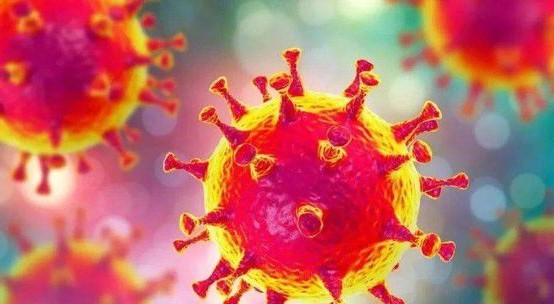

About sharing:Novel coronavirus pneumonia(If you want to know more, please click the text above.)Currently, I think novel coronavirus pneumonia is the most valuable time to share in the past month. First, share a touching time during pneumonia. New Year's eve, this is a family reunion day, but the development of pneumonia outbreak, medical workers have been, in his post, January 23, ten o 'clock in the morning, wuhan subway, bus officially shut down, but 24, also is the first day of the New Year, the children's hospital of wuhan Li Changjian rose more than five o 'clock, riding a bicycle, the department took two hours covered in sweat, just in order to protect more people. So I think every medical staff is moving. Knowing the arrival of 2020 helps us realize this wish. We have to stay at home, everyday or decadent life, because of the harm of virus. We still remember the look we expected in 2020 in the composition written in primary school, but now there are no robots everywhere, no convenient means of transportation in the sky, but there are countless disasters. But in spite of this, we are still not discouraged. Every member of the front line is striving hard, and every member of the Chinese people are actively cooperating. I believe that in the near future, the virus will gradually disperse, and every isolated patient can run in the sun again. From this incident, it is even more proof of China's strength. When China discovers the virus, it timely blocks the city, leaving 99% of the virus in China, and 85% of the virus in Hubei in Wuhan. China is the best.Refueling China Soon, we will see the bustling people in the square again, the cars running on the road, people are busy again, everything is back to normal, this is our happiest life. |
 |